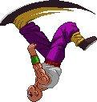
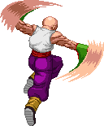

Flip Kick
Tien's Neutral and Forward Throw, which is special in that you can combo into it. It'll link after his Light or Medium Attacks.
You can't combo into it when the attacks leading up to it are blocked.

Hop Kick
Tien performs a small forward hop while traveling forward and kicks.
Can chain into his Strong Attacks.
The hop will also act as a hit (hitting with his knee) when performed close enough to the opponent.

Switch Kick
Medium Kick linked into a slighly shorter-ranged version of the Hop Kick.

Volley Ball Save!
Tien's Running Attack is part of his Volley Ball set.
He leaps down to the ground while performing a sliding uppercut punch.
If it hits, the opponent is launched over him. Get up quick and try to catch them!


Traveler Kick
Identical to his default standing Strong Kick,
except now Tien travels forward quite a bit.

Volley Ball Spike!
Aerial Strong Punch, part of his Volley Ball set!
The Spike rams the opponent down to the ground, where they bounce off it.
As usual, the ground bounce only works once per combo; the second time used
they'll just get smashed down.

Buddha's Fist
Also known as 'Cross-Arms Dive'. From the air, Tien indeed
crosses his arms and dives diagonally downward, attempting to crash
into the opponent. When he does this, the opponent is bounced off a little and Tien
recoils up and backwards from the colission. During this time when both fighters
are airborne, Tien can go into Bukujutsu or perform an aerial Special or Super.

Ready!
This is the starter to Tien's Volley Ball Mode, of sorts.
You enter this stance by tapping down, down+Strong Punch.
Once you entered it you can go directly into his Volley Ball Save by pressing Down and his Volley Ball Spike by pressing Up+SP.
If you don't press any button and let go of Down he'll do his Receive attack.
If you start with Save, you can follow up with Receive and end with Spike for the full Volley Ball Combo! You can stay in this stance for an undisclosed amount of time by simply holding Down. Alternatively, you can cancel out of this stance and go back to your default fighting stance by pressing any Kick button.
If you start with Save, you can follow up with Receive and end with Spike for the full Volley Ball Combo! You can stay in this stance for an undisclosed amount of time by simply holding Down. Alternatively, you can cancel out of this stance and go back to your default fighting stance by pressing any Kick button.


Talons
Starter of a rekka special move. Tien performs a double overhead strike while leaping forward,
Light version has the least range while Strong has the most. Upon hitting the opponent with these, you'll have a couple of options
to continue the rekka:
PART 2 OPTIONS:
-QCF+2P = Wings. EX version of this move, detailed below.
-f+P = Kung Fu Concussion. A chain of rapid strikes ending with a launcher kick.
PART 3 OPTIONS (only following Kung Fu Concussion):
-f+P or u+P: Kung Fu Palm. Energy-charged punch in two possible angles, knocks away.
-f+K: Hammer Kick. A leaping overhead kick, knocks down.
-u+K: Spiral Kick. A leaping high kick, knocks away.
There is a limiter version of the Talons, which activates when you perform the Talons a second time within the same combo. This version doesn't restrict itself to the starter part but does a full-on automated combo-ending assault.
The EX version used to be this automated assault but has now become the Wings, which prior to this was an Om-Mode exclusive special move. It's detailed below.
PART 2 OPTIONS:
-QCF+2P = Wings. EX version of this move, detailed below.
-f+P = Kung Fu Concussion. A chain of rapid strikes ending with a launcher kick.
PART 3 OPTIONS (only following Kung Fu Concussion):
-f+P or u+P: Kung Fu Palm. Energy-charged punch in two possible angles, knocks away.
-f+K: Hammer Kick. A leaping overhead kick, knocks down.
-u+K: Spiral Kick. A leaping high kick, knocks away.
There is a limiter version of the Talons, which activates when you perform the Talons a second time within the same combo. This version doesn't restrict itself to the starter part but does a full-on automated combo-ending assault.
The EX version used to be this automated assault but has now become the Wings, which prior to this was an Om-Mode exclusive special move. It's detailed below.

Wings
This is now the EX version of Talons.
Tien performs a twirling, rising multi-hitting strike while leaping upward,
The opponent does not leave the ground when hit by this rising attack.
Since it leaves you in an aerial state close to the opponent, you'll be able to continue a combo by performing any aerial attack.
If you perform this a second time within the same combo, the opponent will fall over.


Hunting Crane
Tien jumps up and forward while delivering a spinning axe kick.
Button strength determines how much Tien travels forward, also when performed in the air.
The opponent is knocked away upon impact. Its best use lies in the EX version,
which upon impact automatically follows up with a jump into falling knee crash,
pinning the opponent down on the ground, then having them slightly bounce up as Tien
dismounts off them. During this dismount, you'll be able to go either into Bukujutsu,
do a Buddha's Fist or a Kikoho.
The EX version has become the Bukujitsu / Hover Mode, which in the past was a standalone move.
Since it's a pretty elaborate move, it's detailed below in a seperate entry.

Bukujutsu (Hover Mode)
Tien is able to keep himself suspended in mid-air for a short while.
After that, he'll drop down.
During the Hover Mode, tap in any of the four directions and he'll do a short airdash in that direction.
Pressing any attack button will make him do that aerial attack in place and drop down.

Chiaotzu's Dodonpa
Tien's Little Helper charges up the signature attack then shoots a small beam straight across the screen.
Chiaotzu can get hit by the opponent while charging and get knocked out of the animation. The Dodonpa knocks the opponent off their feet
and with good timing, Tien can hit them with another attack while they're falling.
Have Tien perform his own Dodonpa along side Chiaotzu's for a twin beam attack!
Costs 500 of power bar to perform, the same as an EX Special Move.

Chiaotzu's Telekinesis
After a short charge-up, Chiaotzu produces a little spark of energy. If this spark hits the opponent,
they'll be trapped from moving and locked into place temporarily.
Whenever the opponent is hit again (be it by Tien or one of Chiaotzu's other attacks), they'll be freed from the hold.
Costs 500 of power bar to perform, the same as an EX Special Move.

Chiaotzu's Shield
An energy shield that can reflect or nullify incoming projectiles.
However, the shield is not impervious to physical attacks; they'll hit right through the shield.
Its main use is actually to hit the opponent with the shield, forcing them to back off.
Costs 500 of power bar to perform, the same as an EX Special Move.
RDP+K performs a close-range version, while DP+K does a longer-ranged version.